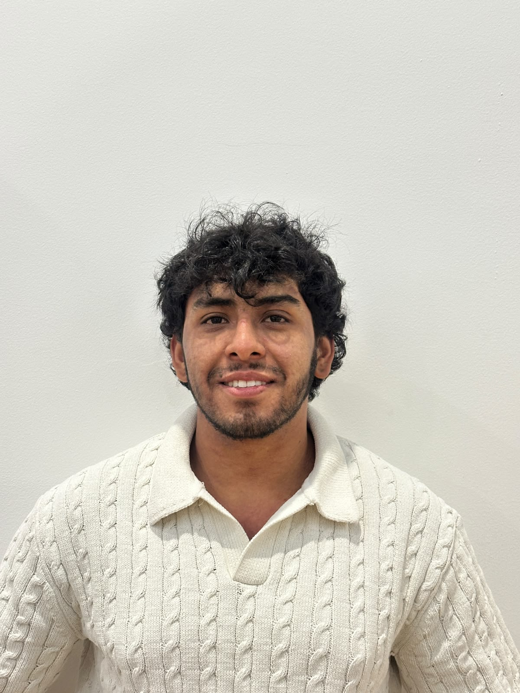
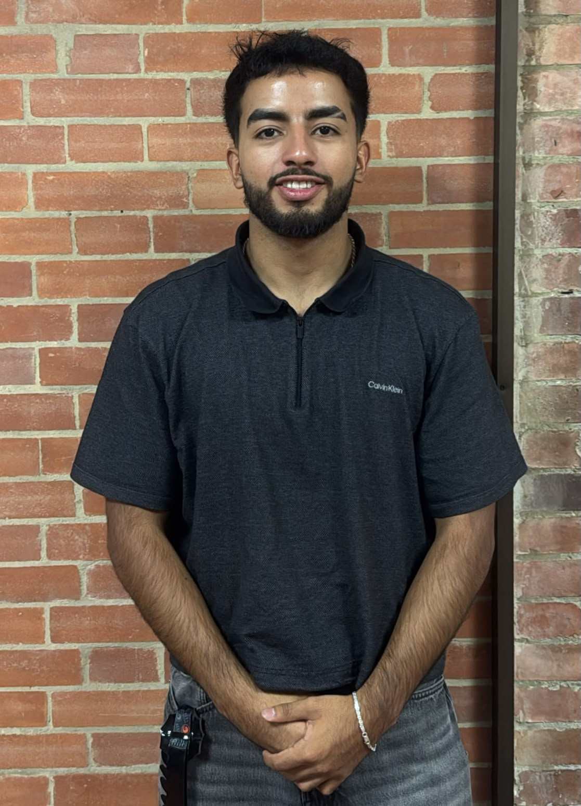
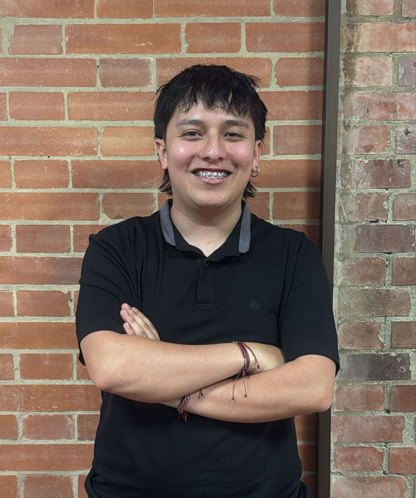
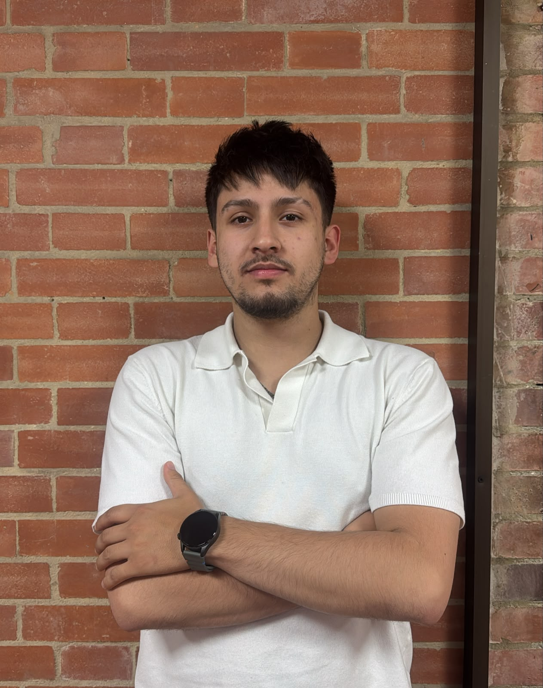
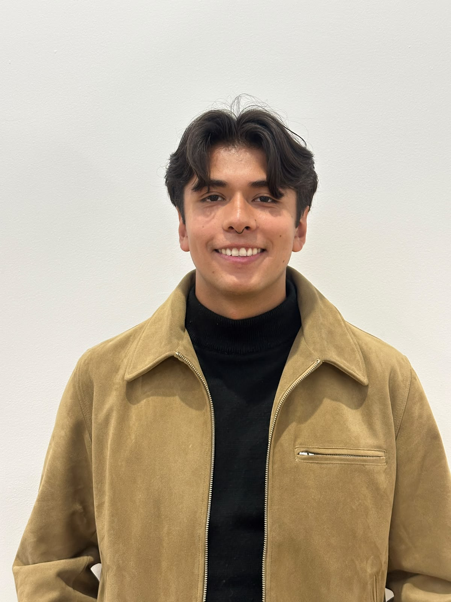

SWNT 2026-2
GuardianMesh
Una red de confianza que ayuda a las personas mayores a detectar llamadas de fraude mientras ocurren, y avisa a su familia.
⬇ Descargar la app Android (.apk) Bitácora de prompts Ver la arquitectura
El problema en Colombia
El vishing (fraude por llamada de voz) y la suplantación de bancos, entidades públicas o familiares ("soy tu nieto", "le hablo de Nequi") se dirigen con frecuencia a adultos mayores. Las tácticas se repiten: pedir dinero o claves, imponer urgencia, exigir secreto y declararse alguien de confianza.
GuardianMesh no depende de que la víctima reconozca el engaño: analiza la llamada en curso y le muestra un semáforo claro, con motivo, voz y vibración.
Cómo funciona
1. Llamada dentro de la app
Audio 1:1 por WebRTC, de dispositivo a dispositivo, entre dos usuarios GuardianMesh.
2. Análisis en casi tiempo real
El teléfono de quien recibe envía fragmentos de ~8 s al backend. IA en Amazon Bedrock + reglas determinísticas.
3. Semáforo y respuesta
En ámbar o rojo puede responder una pregunta secreta familiar o colgar y avisar a su contacto de confianza.
GuardianMesh en acción
Una persona mayor recibe una llamada, el LLM reconoce la estafa y una llave familiar confirma quién está al otro lado.
La celda es una metáfora: en el producto, RED alerta a la persona, que puede colgar y avisar a su Red de Confianza.
Semáforo de riesgo en llamada
El color nunca va solo: siempre se acompaña de texto, ícono, voz y vibración configurables. Tras un rojo, la llamada no vuelve a verde antes de 15 s (histéresis).
Los 4 repositorios
Cada tarjeta enlaza a la rama development.
GuardianMesh-api
API & Auth Gateway y motor de riesgo.
GuardianMesh-communications
Señalización WebRTC 1:1 por WebSocket.
GuardianMesh-front
PWA y app Android.
GuardianMesh-infra
Infraestructura AWS como código y pipeline.
El MVP en una frase
Llamadas de audio 1:1 por WebRTC dentro de la app, avisos en tiempo real por WebSocket + DynamoDB y desafío familiar protegido con HMAC-SHA256. Análisis acústico ligero en tiempo real mediante extracción estadística de energía (RMS) y cruces por cero (ZCR), optimizado para baja latencia en móvil.
Detalle completo en Alcance y evolución. Mira también el diseño UX/UI y flujo de pantallas.
Equipo
Proyecto SWNT 2026-2 · Escuela Colombiana de Ingeniería Julio Garavito.
María Paula Rodríguez

Juan Miguel Rojas

Cristian Silva

Miguel Vanegas

Felipe Calvache
